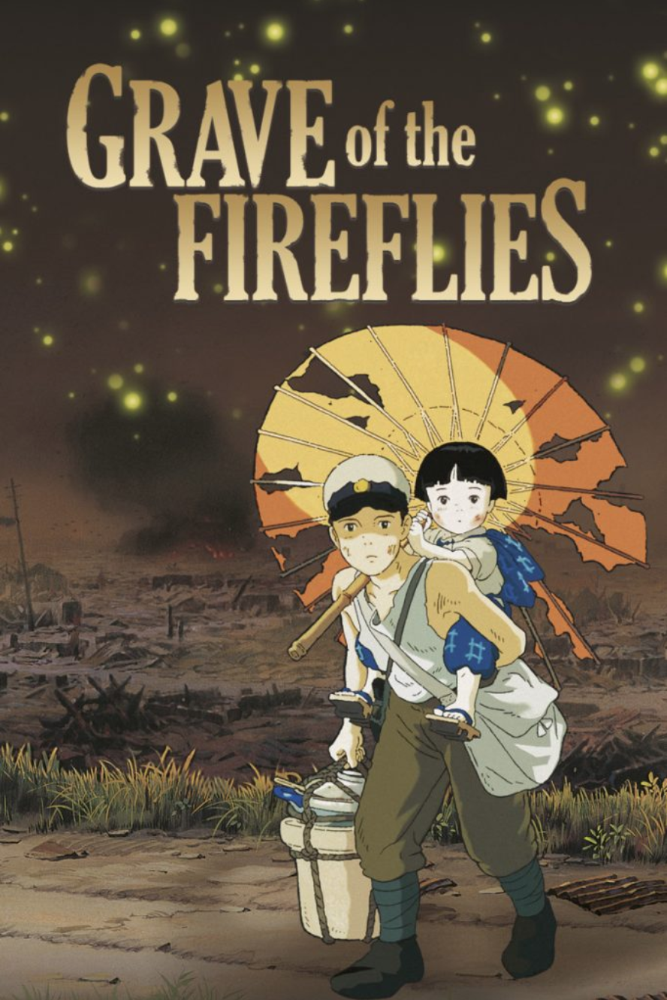

Director: Hayao Miyazaki
Released: 1989
Starring: Chika Sakamoto, Noriko Hidaka, Hitoshi Takagi
It is based on the 1967 semi-autobiographical short story of the same name by Akiyuki Nosaka. The film tells the story of two siblings, Seita and Setsuko, and their desperate struggle to survive during the final months of the Second World War. Roger Ebert of the Chicago Sun-Times considered it to be one of the best and most powerful war films and, in 2000, included it on his “Great Movies” list.